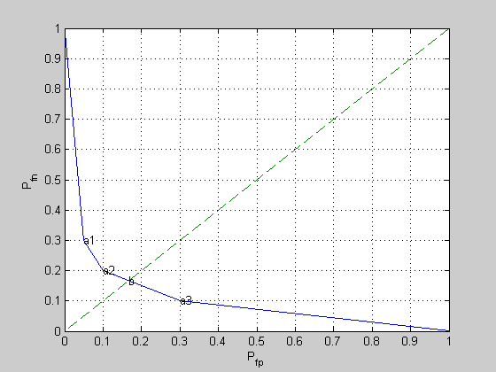

Example 7.4: Binary hypothesis testing
P = [0.70 0.10
0.20 0.10
0.05 0.70
0.05 0.10];
[n,m] = size(P);
nopts = 1000;
weights = logspace(-5,5,nopts);
obj = [0;1];
inds = ones(n,1);
next = 2;
for i = 1 : nopts,
PW = P * diag( [ 1 ; weights(i) ] );
[ maxvals, maxinds ] = max( PW' );
if (~isequal(maxinds', inds(:,next-1)))
inds(:,next) = maxinds';
T = zeros(m,n);
for j=1:n
T(maxinds(1,j),j) = 1;
end;
obj(:,next) = 1-diag(T*P);
next = next+1;
end;
end;
plot(obj(1,:), obj(2,:),[0 1], [0 1],'--');
grid on
for i=2:size(obj,2)-1
text(obj(1,i),obj(2,i),['a', num2str(i-1)]);
end;
cvx_begin
variables T( m, n ) D( m, m )
minimize max( D(1,2), D(2,1) )
subject to
D == T * P;
sum( T, 1 ) == 1;
T >= 0;
cvx_end
objmp = 1 - diag( D );
text( objmp(1), objmp(2), 'b' );
xlabel('P_{fp}'); ylabel('P_{fn}');
Calling SDPT3: 10 variables, 5 equality constraints
For improved efficiency, SDPT3 is solving the dual problem.
------------------------------------------------------------
num. of constraints = 5
dim. of linear var = 10
*******************************************************************
SDPT3: Infeasible path-following algorithms
*******************************************************************
version predcorr gam expon scale_data
NT 1 0.000 1 0
it pstep dstep pinfeas dinfeas gap mean(obj) cputime
-------------------------------------------------------------------
0|0.000|0.000|3.0e+00|2.9e+00|1.0e+02| 4.743416e+00| 0:0:00| chol 1 1
1|1.000|1.000|1.1e-06|9.8e-02|1.2e+01| 2.641379e+00| 0:0:00| chol 1 1
2|0.952|0.990|8.2e-08|1.1e-02|6.3e-01|-1.401031e-01| 0:0:00| chol 1 1
3|1.000|0.887|2.1e-07|2.1e-03|1.4e-01|-1.573907e-01| 0:0:00| chol 1 1
4|1.000|0.825|1.7e-08|4.4e-04|4.3e-02|-1.646256e-01| 0:0:00| chol 1 1
5|0.934|0.984|1.5e-09|1.7e-05|2.2e-03|-1.662023e-01| 0:0:00| chol 1 1
6|0.988|0.988|2.7e-10|1.2e-06|2.5e-05|-1.666604e-01| 0:0:00| chol 1 1
7|0.989|0.989|2.1e-11|1.3e-08|2.8e-07|-1.666666e-01| 0:0:00| chol 1 1
8|0.994|1.000|2.3e-13|4.2e-12|4.4e-09|-1.666667e-01| 0:0:00|
stop: max(relative gap, infeasibilities) < 1.49e-08
-------------------------------------------------------------------
number of iterations = 8
primal objective value = -1.66666664e-01
dual objective value = -1.66666668e-01
gap := trace(XZ) = 4.35e-09
relative gap = 3.27e-09
actual relative gap = 3.26e-09
rel. primal infeas = 2.31e-13
rel. dual infeas = 4.15e-12
norm(X), norm(y), norm(Z) = 8.9e-01, 1.5e+00, 1.9e+00
norm(A), norm(b), norm(C) = 4.3e+00, 2.0e+00, 3.2e+00
Total CPU time (secs) = 0.1
CPU time per iteration = 0.0
termination code = 0
DIMACS: 2.3e-13 0.0e+00 6.7e-12 0.0e+00 3.3e-09 3.3e-09
-------------------------------------------------------------------
------------------------------------------------------------
Status: Solved
Optimal value (cvx_optval): +0.166667
